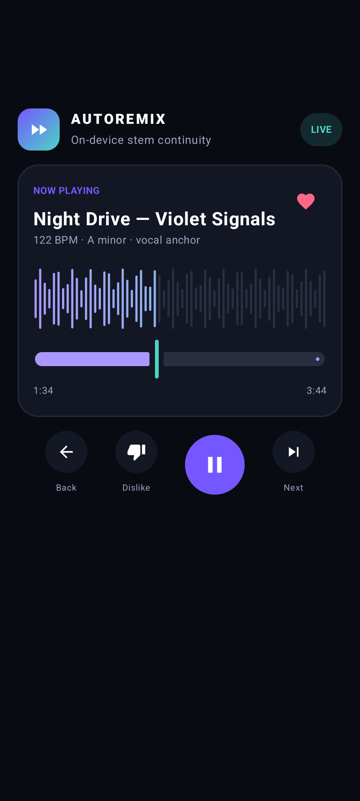
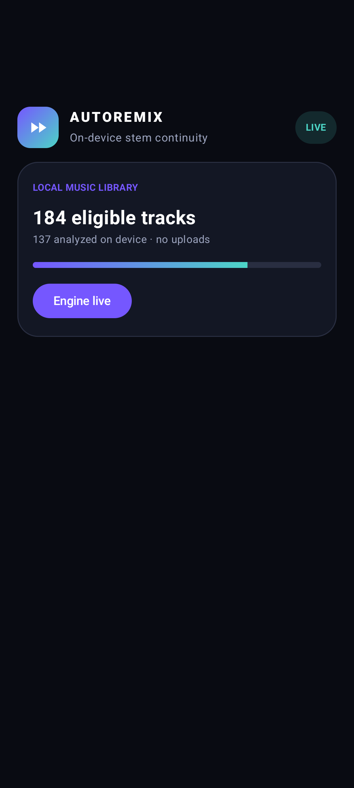
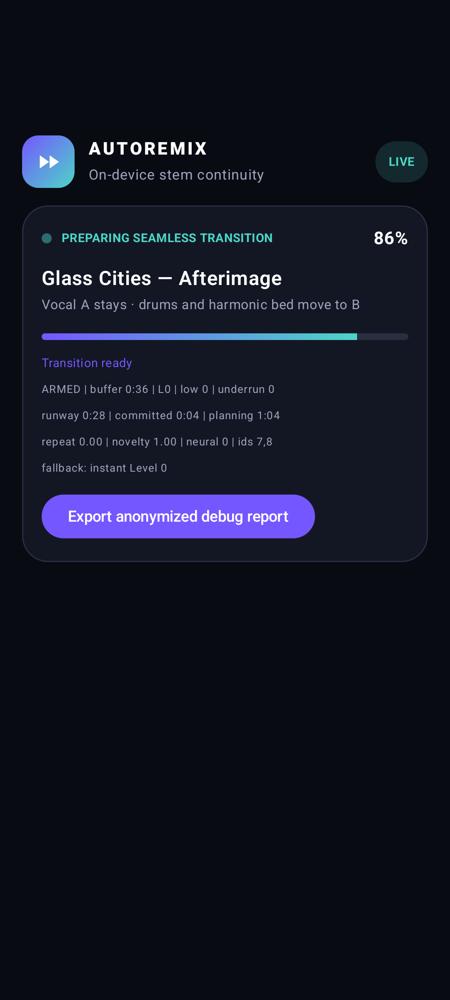
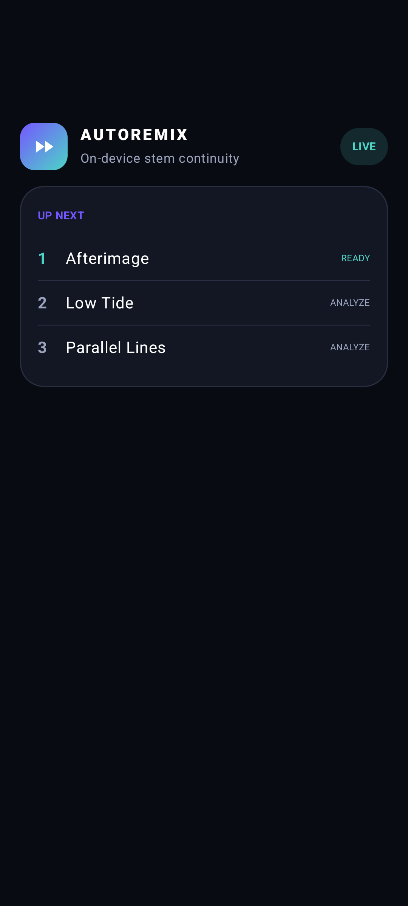
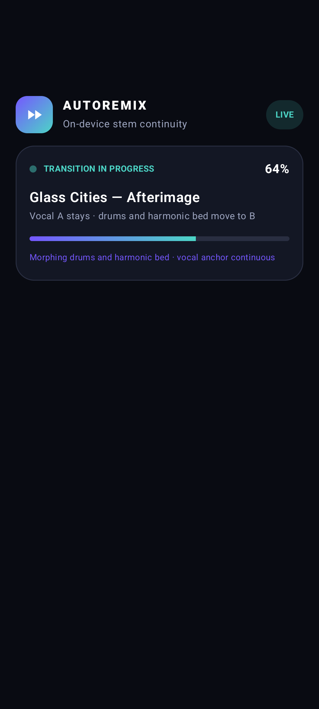
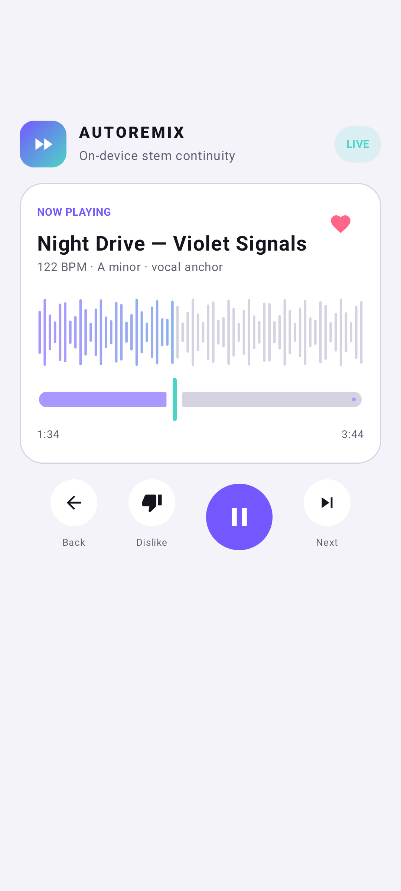

AutoRemix builds an intermediate musical scene. It keeps the strongest line continuous while drums, bass, harmony, and vocals hand off on independent timelines.
Move through the continuous scene to inspect which source owns each stem.
Source AProceduralSource B
1master PCM clock
0cloud dependencies
3quality profile contracts
Nindependent stem paths
The engine
A transition is a scene, not a volume curve.
A bounded search proposes structured stem scenes. Hard gates reject clicks, unready buffers, missing anchor coverage, and invalid vocal ownership before musical ranking begins.
01
Choose the line worth keeping
The director scores continuity, confidence, transients, harmonic stability, and foreground importance. The listener never has to select an anchor.
guitardrumsbasspadanchor
02
Plan every stem
Each line carries its own provenance and sample-accurate automation. A plan is rejected if its anchor drops out.
03
Never hold on one loop
Track A keeps its natural runway. A deterministic multi-block continuation is pinned before optional future models can improve it.
natural runwaycontinuation graphaligned fallback
The apps
Complex underneath. Quiet on the surface.
Android runs the deterministic structured planner, prepared stem nodes, one persistent master graph, and one Oboe stream. No neural model is bundled. The screenshots below predate the new inspector fields.

Now playingAnchor and preparation state, without engineering noise.

Local libraryScoped media access. No upload step.

Transition readinessStem plan first, explicit fallback only when required.

QueueVibe continuity, feedback, and viable future paths.

Transition in progressIndependent stem handoffs keep the anchor continuous.

Light themeThe same focused transport in system light mode.
Captured from the Compose screenshot harness on the Android API 37 emulator.
Architecture
Offline intelligence. Realtime discipline.
CONTROL PLANE
Media decoderPlatform-native, local files
Preprocess + reservoirVersioned chunks and continuation graph
Structured stem planCandidate search → hard vetoes
sample activationprepared stem horizon
REALTIME PLANE
Master graphOne 48 kHz sample clock
SPSC ringPreallocated, lock-free
Platform outputOboe / AVAudioEngine
No allocationNo locksNo file I/ONo inferenceNo loggingNo network
Adaptive quality
Use what the device can sustain.
AProvider-ready
Neural high-end
Optional licensed separation and instrumental continuation after real device measurements.
Multiple generated candidates
Learned embeddings
Technical gates still mandatory
BProvider-ready
Hybrid mid-range
Compact providers plus spectral morphing and a shorter bounded search.
Resource-aware lookahead
Fewer expensive candidates
Aggressive cache reuse
CImplemented core
Deterministic
Non-repeating graph continuation, WSOLA, bounded variation, and staged stem handoff.
No model weights
Works fully offline
Guaranteed PCM horizon
Honest status: no neural weights ship today. “AI” is not used as a label for filters or heuristic DSP.
Reproducible demo
Hear the fixture, inspect the source.
These short clips are generated from equations in the repository. They contain no sampled song, voice, or model output.
01
Source A
112 BPM · guitar anchor
02
Source B
118 BPM · target arrangement
03
Continuous stem scene
A → independent stem handoff → clean B
Generated deterministically by scripts/generate_audio_fixtures.py. Assets are CC0; checksums and technical metrics are in the adjacent manifest.
Privacy by architecture
Your library stays your library.
01Analysis runs on the device.
02Source audio is never uploaded.
03No account or backend is required.
Roadmap
Measured progress, not model theatre.
01
Shared deterministic coreStem plans, anchor invariant, bounded search, evaluator, lifecycle, C ABI.
02
Progressive platform slicesCompose + Oboe, SwiftUI + AVAudioEngine, rolling horizons, and non-repeating fallback.
03
Device corpus and benchmarksClick fixtures, memory, latency, battery, thermal, and underrun measurements.
04
Licensed provider experimentsModels only after code, weight, and dataset license review.
Build with us
One musical scene. Then another.
Read the invariants, run the deterministic core, and bring a measured improvement.